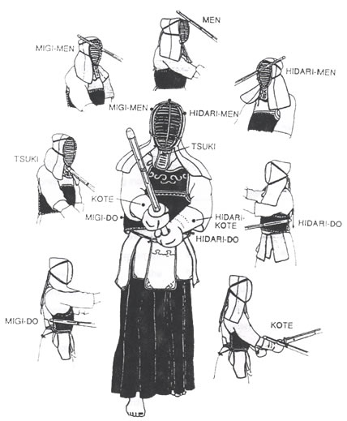

A scorable point in a
kendo competition is defined as an accurate
strike or thrust made onto a datotsu-bui of the opponent's kendo-gu with the shinai making
contact at its datotsu-bu, the competitor displaying high spirits, correct posture and followed
by zanshin.
Zanshin (残心), or continuation of awareness, must be present and shown throughout
the execution
of the strike and the kendōka must be mentally and physically ready to attack again.
In competition, there are usually three referees (審判, shinpan). Each referee holds a red flag and a white flag in opposing hands. To award a point, a referee raises the flag corresponding to the color of the ribbon worn by the scoring competitor. Usually, at least two referees must agree for a point to be awarded. Play is stopped after each point is awarded.
- Men-bu, the top or sides of the head protector (sho-men and sayu-men).
- Kote-bu, a padded area of the right or left wrist protector (migi-kote and hidari-kote).
- Do-bu, an area of the right or left side of the armour that protects the torso (migi-do and hidari-do).
- Tsuki-bu, an area of the head protector in front of the throat (Tsuki-dare).